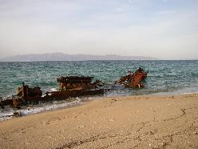

{kind=link}
{kind=link}
{kind=link}
{kind=link}

Click on images to view a larger version.
| Me next to a fig tree. | |
|---|---|
| An ultralight over the beach outside San Jose del Cabo. Note the full moon just over the horizon. | |
| A closeup of the same ultralight. | |
| A nice sunset with a hint of the green flash. | |
|
| View of the Pacific on the hike to Sierra de la Laguna. |
| Do I still want to go swimming today? | |
| Seashells. | |
| Shipwreck of the CEDROS, near bahia de los muertos. | |
|  | Rear portion of the CEDROS, including the engine. |
| The same shipwreck, circa 1993. | |
| A better than average Mexican highway. | |
| A roadrunner? | |
| Sailboarding and kiteboarding near Los Barriles, halfway between La Paz and San Jose del Cabo on the gulf of California. The guy with the blue kite is airborne. | |
| A fig tree wrapped around a boulder on the hike up canyon San Bernardo. | |
| Closeup of the root system of a fig tree. | |
| Swimming in one of the deep freshwater pools in the canyon San Bernardo. | |
| Waterfowl in a lagoon abutting the ocean in San Jose del Cabo. |
{kind=link}
{kind=link}
{kind=link}
{kind=link}
{kind=link}
{kind=link}
{kind=link}
{kind=link}
{kind=link}
{kind=link}
{kind=link}
{kind=link}